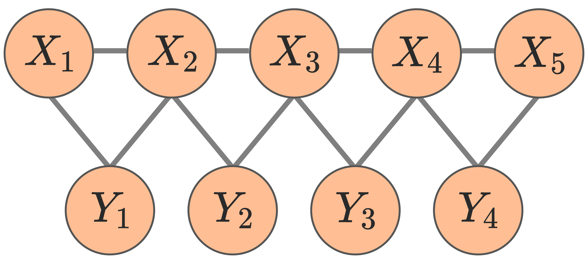

1. Attention → Markov Random Field
Our starting observation: the self-attention at the upper layers of a dLLM behaves like a conditional dependency graph over the masked tokens — precisely the Markov Random Field (MRF) over those positions.
To validate this empirically, we train a small MDM on a synthetic dataset with a known MRF structure (see Fig. 3) and compare attention scores against the ground-truth edges. Attention at the final layers recovers the true edges with AUC 0.928 and ranks node degrees with an order-violation rate of just 0.04, confirming that attention encodes the MRF. See the paper for details.

What is Markov Random Field?
How do we relax this in practice?
The MRF demands global conditional independence (given all other variables), but self-attention only gives us a pairwise signal $a_{ij}$ — the direct weight from $i$ to $j$. We relax the definition by using low pairwise attention as a proxy for conditional independence:
averaging over all heads in the final 30% of layers, where upper layers integrate more global context. Intuitively, if $j$ barely attends to $i$, then $j$ contributes little to the prediction at $i$ — so low pairwise attention serves as a reasonable proxy for pairwise independence.